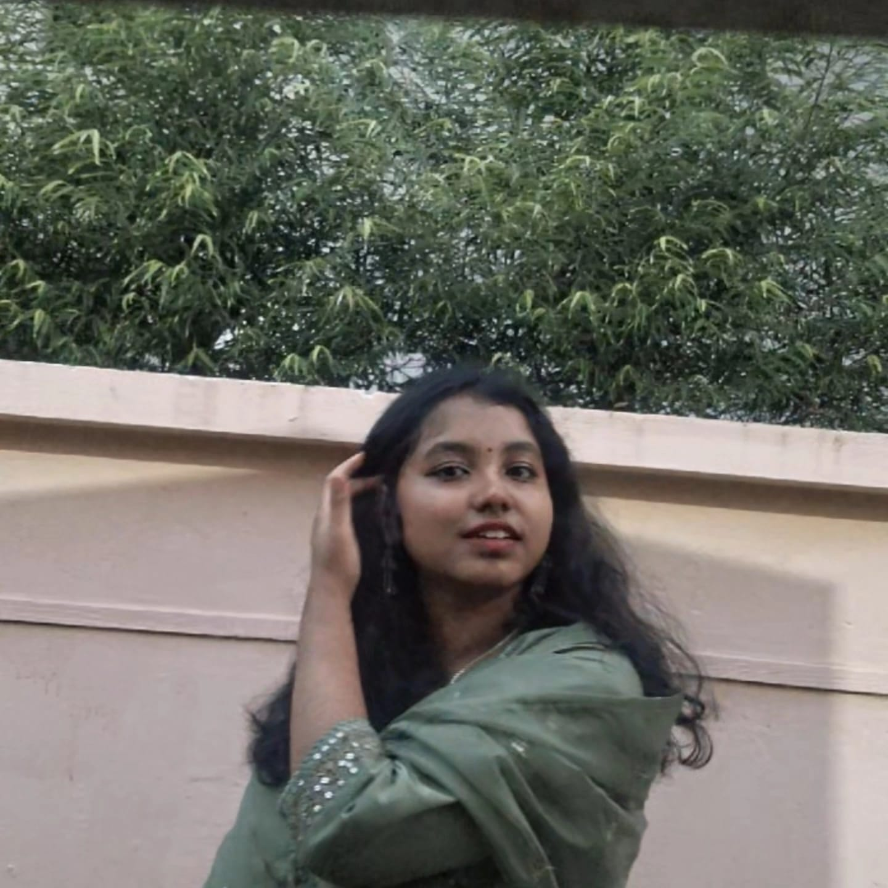

I believe in think like a child where the world is not bland but bustling with stories waiting to be told. With a background in copywriting and graphic design, I craft narratives that resonate and visuals that captivate.
Want to see how I make palette and layout decisions? Customize this mock Poetry Slam promo flyer dynamically inside my sandbox to observe visual harmony in real-time.
"In Canva, restraint is key. Allowing typography to breathe while giving graphic silhouettes enough empty space creates modern, professional layouts."
The Poetry Slam
WHERE:
INSTAGRAM LIVE
ENTRY
FREE REG
Good marketing copywriting isn’t just list formatting; it's world-building. Compare a dry administrative announcement with the storytelling narrative I designed for the Slam.
"Sorry our account isn't Hack but you can Hack the stage this Friday at Bansuri Guru Auditorium by Lobbing and Debating."
"Between the lines we live, between the characters we heal. This Friday, the cafe light softens and the floor belongs entirely to you. No judgment. No expectations. Just raw, unedited truth under the soft glow. Bring your whispers; we'll provide the stage."
A typographic-focused, minimalist publication design capturing student essays, poetry, and modern illustrations.
Editorial Design→A sequence of narrative-driven social media micro-essays designed to increase cultural registrations.
Copywriting →Explore the narrative and design strategy behind the campus’s largest creative arts event of the season.
Attention is won in seconds. We opened with bold statements and surprising questions, creating intrigue that made audiences stop scrolling. By combining emotional triggers with minimalist layouts, the message stood out and demanded focus.

I design cohesive experiences. As the Creative Associate at Soa English Cafe, an english literary community, my focus resides at the intersection of literary copywriting and graphic composition.
Design is not just arranging shapes on a Canva frame; it is extending a story’s physical presence. Narrative copywriting is not just a layout filler—it’s establishing the atmosphere of the room before you ever step foot inside.
"Let's build sanctuaries of expression that quiet the noise and demand human connection."
Whether you want to coordinate event identities, seek creative copywriting, or design atmospheric graphics.